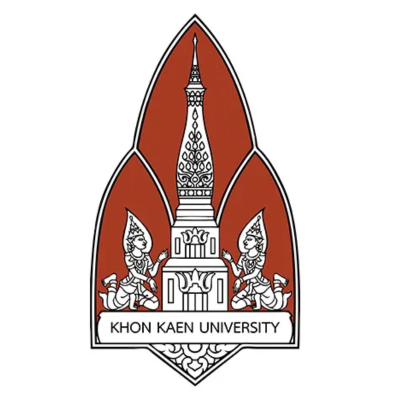
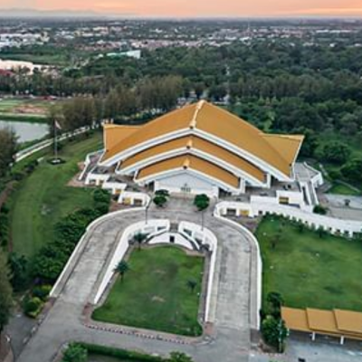
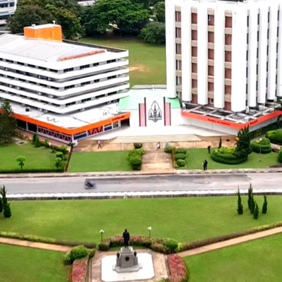

Khon Kaen University



Khon Kaen University (KKU), founded in 1964 and located in northeastern Thailand, is one of the country’s leading public universities and a center for education, research, and innovation in the region. Known for its strong academic programs in medicine, engineering, agriculture, education, and social sciences, KKU plays a vital role in driving regional development while maintaining global connections. With its commitment to community engagement, sustainable development, and academic excellence, the university fosters knowledge, innovation, and leadership to prepare graduates who contribute to both Thailand and the international community.